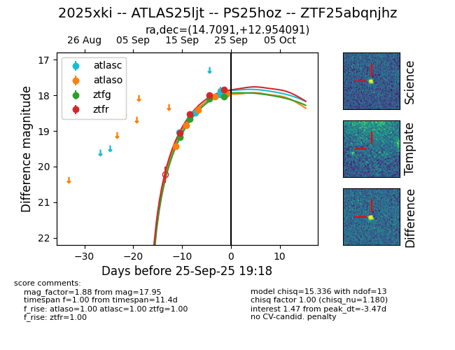
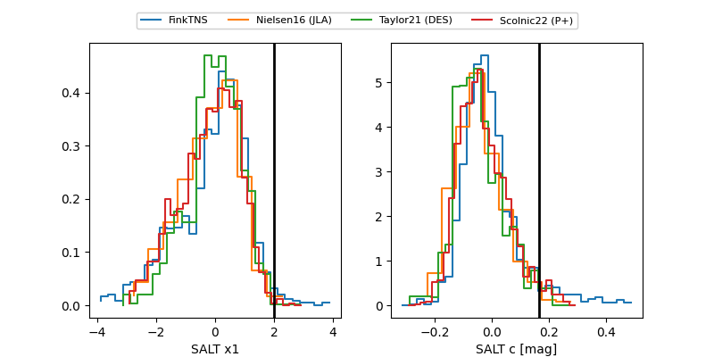

FINK: ZTF25abqnjhz
Lasair: ZTF25abqnjhz
ALeRCE: ZTF25abqnjhz
TNS: 2025xki
YSE: 2025xki
ZTF25abqnjhz (ztf,fink)
2025xki (tns,yse)
ATLAS25ljt (atlas)
PS25hoz (panstarrs)
equatorial (ra, dec) = (14.7091,+12.95409)
galactic (l, b) = (125.7297,-49.87746)


last atlasc=17.88, atlaso=17.95, ztfg=18.04, ztfr=17.84
4 atlasc, 5 atlaso, 4 ztfg, 4 ztfr detections